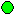
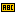
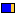
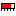
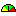
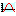

Editor & Widget Palette

The editor shows the configuration of a display in the edit mode. Each display is based on a
configuration file (file extension‚ *.css-sds) located in the workspace. In the edit mode there
is no connection to the control system, so it is not possible to change values accidentally.
To start a display in the execute mode press  on the button bar and SDS will open it in a new shell.
(Make sure that the display editor is saved to get your last changes).
on the button bar and SDS will open it in a new shell.
(Make sure that the display editor is saved to get your last changes).
SDS Widgets
The simple Widget
 ARC:
ARC:
 Ellipse:
 Image:
Image:
 Label:
 Poligon:
Poligon:
 Polyline:
Polyline:
 Rectangle:
The complex Widgets
 Bargraph:
 Meter:
 Switch:
Switch:
 Waveform:
Action Widgets
 Action Button:
Action Button:
Menu Button:
 Simple Slider:
Simple Slider:
Text Input:
Other Widgets
 Grouping Container:
Grouping Container:
 Linking Container:
Linking Container:
 Timer:
Timer:
Widget Palette
The widget palette on the right side shows all available widgets you can add to the active
display. For a description of the widgets please refer to the page Widgets.